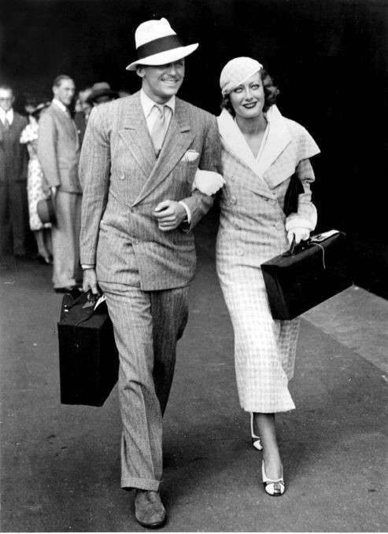
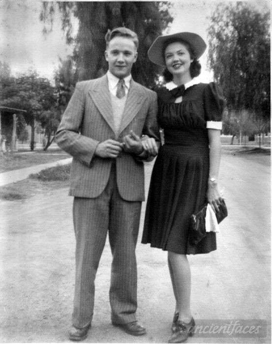
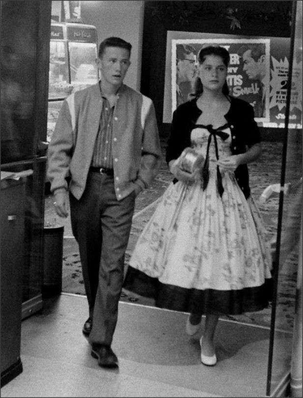

În anii 1930, moda a fost marcată de eleganță și rafinament, în ciuda Marii Crize Economice. Rochiile femeilor au continuat să fie lungi, cu siluete fluide și talia bine definită. Se purtau rochii de seară strălucitoare, din materiale precum satinul și mătasea, adesea împodobite cu paiete și mărgele. Rochiile de zi aveau linii simple, dar sofisticate, și adesea erau completate cu jachete sau paltoane bine croite. Moda masculină din anii 1930 era caracterizată de costume cu umeri largi și pantaloni cu talie înaltă. Costumele aveau un aspect mai relaxat, dar păstrau totuși un aer de eleganță. Materialele erau de calitate, iar culorile preferate includeau tonuri de gri, maro și bleumarin. Accesoriile au jucat un rol important în definirea stilului anilor 1930. Pălăriile erau esențiale atât pentru bărbați, cât și pentru femei. Femeile purtau pălării elegante, adesea decorate cu voaluri sau pene, în timp ce bărbații optau pentru pălării fedora sau trilby. Moda anilor 1930 a reflectat dorința de a menține un nivel de eleganță și rafinament în ciuda dificultăților economice, aducând un sentiment de glamour și evadare în viața cotidiană.
În anii 1940, moda a fost profund influențată de cel de-Al Doilea Război Mondial și de restricțiile economice care au urmat.Hainele erau practice și funcționale, reflectând necesitatea de economisire și reutilizare a materialelor. Femeile purtau rochii simple, adesea confecționate din bumbac sau lână, cu linii drepte și croieli minimaliste. Fustele erau mai scurte, ajungând până la genunchi, pentru a economisi material. Uniformele militare au influențat moda civilă, introducând jachete cu umeri accentuați și fuste creion. Accesoriile erau limitate, dar pălăriile mici și turbanele erau populare, adesea folosite pentru a ascunde părul mai scurt și mai practic. După război, moda a început să se relaxeze și să revină la eleganță, culminând cu introducerea "New Look" de Christian Dior în 1947. Acest stil punea accent pe talie subțire și fuste ample, oferind un contrast puternic față de austeritatea anilor de război. În ansamblu, moda anilor 1940 reflecta adaptarea la condițiile de război și dorința de revenire la feminitate și eleganță în perioada postbelică.
În anii 1950, moda a reflectat prosperitatea și optimismul perioadei postbelice, punând un accent puternic pe feminitate și eleganță. Rochiile femeilor aveau talia subțiată și fuste ample, adesea susținute de jupoane pentru a crea volum. Stilul „New Look” introdus de Christian Dior în 1947 a dominat acest deceniu, cu rochii de zi bine croite și rochii de seară din materiale luxoase, cum ar fi satinul și mătasea, decorate cu broderii și dantelă. Moda casual pentru femei a inclus fuste cerc, bluze înnodat pe talie, cardigane și pantaloni capri. Coafurile erau elaborate, cu părul adesea coafat în bucle sau cocuri sofisticate. Accesoriile, precum mănușile elegante, perlele și pălăriile diverse, erau esențiale pentru completarea ținutelor. Moda masculină era caracterizată de costume bine croite, cu umeri accentuați și pantaloni conici. Bărbații purtau adesea cămăși albe cu cravată și jachete sport. În timpul liber, stilul casual includea pulovere, tricouri polo și pantaloni chino. Pălăriile fedora și pantofii eleganți completau look-ul masculin. În ansamblu, moda anilor 1950 a fost despre rafinament, feminitate și stil, reflectând dorința de stabilitate, eleganță și prosperitate în perioada postbelică.
